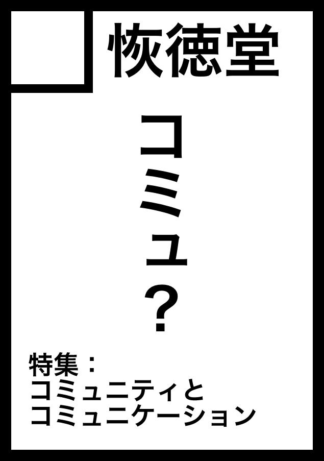

ポートフォリオを掲載する予定です
サイトの小改修を行いました
久しぶりの更新になります。
当サイトですが、ポートフォリオの掲載を中心として、細々とした改修を行いました。
変更点としては以下の通りです。
- ポートフォリオの掲載。ただし現在は書きかけ。
- SNSリンクにマストドンを追加。
- トミーウォーカーキャラクター一覧のバストアップが小さいのを修正。
今後も、余裕あるときに少しずつ更新していけたらと思います。
よろしくお願いいたします。
コミックマーケット92に申し込みしました
コミックマーケット92に申し込みいたしました
このたび、私のサークル、恢徳堂はコミックマーケット92に、評論ジャンルで申し込みいたしました。

コミュニティとコミュニケーション
今回のテーマは「コミュニティとコミュニケーション」です。
コミュニティとコミュニケーションという2つのテーマを考えることにより、人との結びつきをよりよいものにしていければ、と思っています。
ここ最近、IT勉強会の仲間に、私のコミュニケーション能力は初めて会ったときより上がったんじゃないか、と言われました...
2017年 Open Lifelog計画について
気がつけば2017年
こんにちは、イオシフです。
気がつけば2017年も12分の1がすでに過ぎてしまいました。
とはいえ、今年もよろしくお願いいたします。
2017年には、下手すると五カ年計画になりそうな勢いなのですが、オープンライフログ計画をスタートさせようと考えています。
オープンライフログって何だ？！！
オープンライフログとは、私個人の様々なライフログからデータを分析し、メンタルなどの健康の可視化に役立てつつ、オープンデータとして様々なデータを提供しようというプロジェクトです...
ケルベロスブレイド「バレンタインは終わらない」仮プレイング
ケルベロスブレイド「バレンタインは終わらない」仮プレイング
この記事はケルベロスブレイドに関する記事です
この記事は、株式会社トミーウォーカーのプレイ・バイ・ウェブ、ケルベロスブレイドに関する記事です。
キャラ口調で書くことがありますのでご注意ください。
仮プレイング
『バレンタインは終わらない』（担当マスター：ハル）の仮プレイングだよ。
プレイングは以下の通り。
バレンタインデーは菓子屋の陰謀か。私は、バレンタインデーのいきさつとアメリカ式のバレンタインデーの過ごし方...
コミュニケーションについて思うことを書いてみる
目次
今日は降誕祭ですね
コミュニケーション Advent Calendar 2016の大トリを飾らせていただきます。
何はともあれ、今日は新暦で降誕祭ですね。
人間は成長できる
降誕祭というのは、イイスス・ハリストスが人間の嬰児として生まれてきたことを記憶する日な訳です。
それは、この世が輝かしく作り直され...
イオシフさんの静的サイトジェネレータの使い方
Qiitaの中で逢った、ような……
大トリはとっても嬉しいなって
静的サイトジェネレーター Advent Calendar 2016に参加してます。
なんだか大トリをやるはめになってしまいましたが、笑ってお読みいただければ幸いです。
もうデプロイも恐くな...
今年興味を持った技術遍歴をざっと語ってみる
目次
はじめに
カレシ・カノジョできないエンジニア Advent Calendar 2016の12/19分に参加しています。
今年興味を持った技術
17日に...
コミックマーケット91新刊、入稿しました
無事入稿しました
印刷所から連絡があり、無事入稿できたとのこと。
新刊『Madokaist』、当日は500円で頒布いたします。
コミックマーケット2日目は、東F51aまでお越しください。
Xamarin始めました
Xamarin始めました
Xamarinという、C#でWindows、Mac、iOS、Androidのアプリケーションが書ける技術を導入してみました。
導入はストレージの空きを確保するのが大変でしたが、とりあえずHello, World的なものは書けました。
最終的には、何かアプリを作ってみたいと考えています。
何か面白いアイディアや、Xamarinに関する情報などありましたらお気軽にご連絡ください。
コミックマーケット91に当選いたしました！
コミックマーケット91に当選しました！
年末の大イベント、コミックマーケット91に当選いたしました。
配置は「金曜日（12月30日）東地区“Ｆ”ブロック－51a」です。
新刊の予定
新刊は、魔法少女まどか☆マギカに関する評論をまとめた『現代焚書 まどかマギカ特集号 Madokaist』になります。
内容は既刊の内容を加筆訂正した、「暁美ほむらは救われるのか」に加え、続編として「暁美ほむらは救われなければならないのか」の2点を予定しています。
それにプラスしてさやかちゃんとか杏子ちゃん...